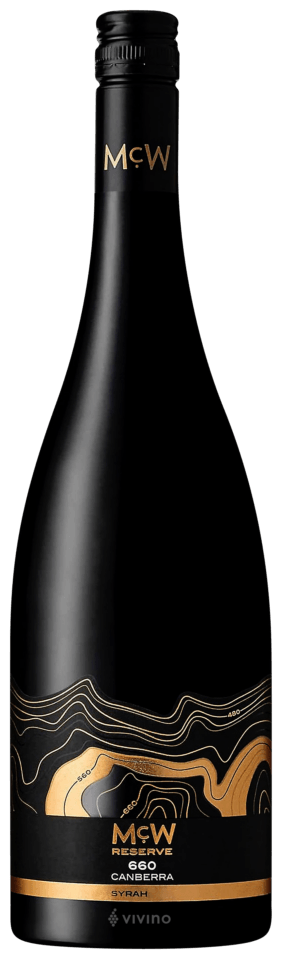

Wine making tradition
McWilliams McW
660 Reserve Syrah
2022 Canberra
The ripe fruit used to produce MeW 660 Reserve Syrah was
harvested and transferred to open fermenters for fermentation
See how it made

Wine making tradition
The ripe fruit used to produce MeW 660 Reserve Syrah was
harvested and transferred to open fermenters for fermentation
See how it made